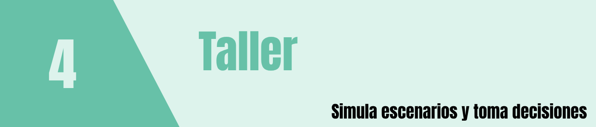

Problema 1. Lanzamiento de monedas
Una moneda equilibrada se lanza 12 veces. Sea \(X\) el número de caras.
- Estime \(P(X\geq 9)\) mediante
1000, 5000 y 20000 réplicas.
- Calcule la probabilidad teórica con la binomial.
- Grafique la convergencia del estimador. (d) Explique la variación
entre ejecuciones.
Problema 2. Suma de dos dados
Se lanzan dos dados justos. Estime \(P(D_1+D_2\in\{7,11\})\) usando Monte Carlo.
Determine el valor teórico por enumeración de los 36 resultados
equiprobables. Construya un grafico de \(f(x)\).
Problema 3. Estimación de \(\pi\)
Genere puntos independientes uniformes en el cuadrado unitario.
Estime \(\pi\) con \(n=100\), \(1000\), \(10000\) y \(100000\). Para cada \(n\), reporte el error absoluto. Repita el
experimento completo 30 veces para cada tamaño y compare la distribución
de los errores.
Problema 4. Integral por Monte Carlo
Estime
\[I=\int_0^1 e^{-x^2}\,dx\]
con 10000 réplicas. Explique por qué el promedio de \(e^{-U^2}\), con \(U\sim U(0,1)\), estima \(I\). Compare con
integrate(function(x) exp(-x^2), 0, 1).
Problema 6. Variable discreta por inversa generalizada
Una máquina presenta el siguiente número de interrupciones por
turno:
| \(P(X=x)\) |
0.50 |
0.30 |
0.15 |
0.05 |
Construya la función acumulada \(F(x)\), divida el intervalo \((0,1)\) en subintervalos asociados a cada
resultado y simule 10000 turnos a partir de runif().
Compare frecuencias relativas y probabilidades teóricas.
Problema 7. Distribuciones continuas
Simule 20000 observaciones de cada modelo: \(N(50,8^2)\), \(\mathrm{Gamma}(3,\text{rate}=0.5)\), \(\mathrm{Beta}(2,5)\) y Weibull de forma 1.8
y escala 100. Presente histogramas con densidades teóricas superpuestas.
Compare medias y varianzas simuladas con las teóricas.
Problema 8
Una planta fabrica componentes electrónicos. Cada unidad tiene
probabilidad de defecto 0.035, de manera independiente. Los lotes
contienen 80 unidades. La política de inspección rechaza un lote cuando
contiene 5 o más unidades defectuosas.
- Identifique la distribución del número de defectuosos.
- Estime la probabilidad de rechazo con 20000 lotes simulados.
- Compare con
pbinom().
- Estime cuántos lotes serían rechazados en un día de 120 lotes,
aclarando qué representa esa estimación.
- Analice el efecto de disminuir la probabilidad de defecto a
0.025.
Problema 9
La demanda diaria de un producto sigue una Poisson con media 24
unidades. La cafetería dispone de 28 unidades al iniciar cada jornada.
Cada venta genera un margen de $4500 COP; cada unidad no vendida implica
un costo de desperdicio de $1200 COP. No se permiten ventas por encima
del inventario.
- Simule 10000 jornadas.
- Estime probabilidad de faltante, ventas medias y desperdicio
medio.
- Defina y estime la utilidad diaria \(U=4500\min(D,28)-1200\max(28-D,0)\).
- Compare niveles de inventario de 24, 28 y 32 unidades usando
las mismas demandas simuladas para una comparación más
estable.
- Recomiende un nivel de inventario y justifique los criterios
considerados.
Problema 10
La duración de un rodamiento, en horas, sigue Weibull con forma 2.2 y
escala 1800. Una intervención preventiva está prevista a las 1500
horas.
- Estime \(P(T<1500)\) por Monte
Carlo.
- Compare con
pweibull().
- Estime el percentil 10 de vida útil.
- Evalúe intervalos de mantenimiento de 1200, 1500 y 1800 horas.
- Discuta qué información real permitiría validar la distribución
asumida.
Problema 11
Una oficina tiene un único servidor. Los intervalos entre llegadas
son exponenciales con media 7 minutos y los servicios son exponenciales
con media 5 minutos. Al comenzar la jornada el sistema está vacío. Se
observarán los primeros 100 clientes.
- Construya una simulación cronológica de llegadas, inicios y finales
de servicio.
- Estime tiempo medio de espera y proporción que espera.
- Repita 1000 jornadas completas e informe el intervalo de confianza
para la espera media por jornada.
- Repita el análisis si el servicio medio baja a 4 minutos.
- Explique por qué el análisis de una jornada aislada no permite medir
adecuadamente la variabilidad entre jornadas.
Problema 12
El costo de una reparación técnica (en millones de COP) sigue una
lognormal con meanlog = 1.5 y sdlog = 0.6. Una
empresa debe financiar los costos que superen 8 millones.
- Simule 20000 costos.
- Estime la probabilidad de superar 8 millones.
- Estime el costo promedio y el percentil 95.
- Estime el desembolso esperado por evento definido como \(\max(C-8,0)\).
- Explique por qué una media baja no descarta eventos de alto
costo.
Problema 13
Seleccione un sistema real: cafetería, parqueadero,
sala de computadores, fila de atención, inventario o componente
mecánico. Desarrolle:
- Descripción: propósito, frontera del sistema y
pregunta de decisión.
- Datos y supuestos: variables observables,
distribuciones candidatas, parámetros y fuentes.
- Modelo: entradas aleatorias, reglas del proceso,
estados y salidas.
- Simulación: mínimo 1000 réplicas independientes del
indicador pertinente; si existe dinámica temporal, cada réplica debe ser
una trayectoria o jornada completa.
- Resultados: tablas, gráficos, estimación,
incertidumbre y análisis de sensibilidad.
- Validación: comparación propuesta con datos del
sistema real; limitaciones de la simulación.
- Extensión: describa cómo integrar datos reales y
actualizar parámetros para evolucionar hacia un gemelo digital.
Preguntas finales de reflexión
- ¿Qué diferencia hay entre incertidumbre inherente al proceso y error
de Monte Carlo?
- ¿Por qué es indispensable identificar las unidades de réplica
independientes?
- ¿Qué ocurre si el modelo probabilístico elegido es incorrecto aunque
se ejecuten millones de réplicas?
- ¿Cómo se relacionan simulación, calibración, validación y gemelos
digitales?